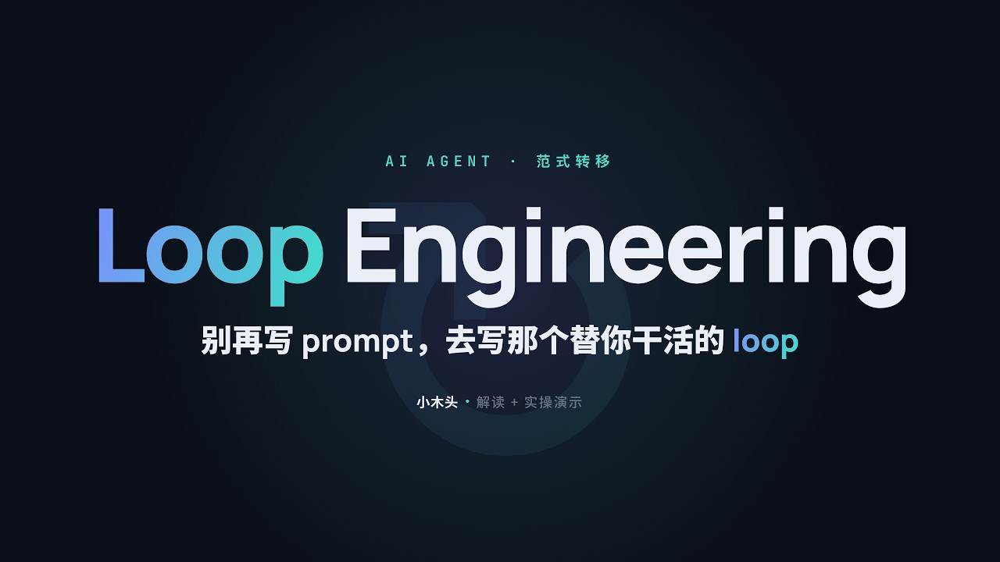

這支影片在講什麼
影片從 Peter Steinberger 與 Boris Cherny 對 AI agent 工作方式的討論切入，再引用 Addy Osmani 的文章，把這波變化命名為 Loop Engineering。
它的重點不是「寫出更神的 prompt」，而是把人從一直下 prompt 的位置移開，改成設計一個能自動觸發、分派、檢查、記錄、再繼續下一輪的系統。

Boris 的三階段：你現在在哪裡
逐行駕駛
你手寫程式，模型幫你補全。典型體感是一直按 Tab、接受建議、再自己繼續寫。
適合：單檔修改、補語法、快速完成小段程式。
並行手動
你同時開多個 Claude Code / Codex / agent 視窗，每個都在工作，但每次任務仍由你親手發起。
風險：你變成調度員，會被上下文、交接、重複檢查拖住。
Loop 作者
你不再逐條發 prompt，而是設計一個系統，讓它定時讀資料、判斷工作、呼叫 agent、驗證結果、寫下狀態。
目標：從「打字的人」變成「設計循環的人」。
一個 Loop 由 5 個零件加 1 根脊柱組成
1. 心跳
定時或事件觸發。到點自己跑，不需要人手動開任務。例：每天 08:00 掃描昨晚新增問題。
2. Worktree
讓不同 agent 在隔離的工作目錄處理任務，避免彼此踩檔案。例：每個 bug 一個獨立分支。
3. Skill
把專案規則、流程、標準寫成可重複使用的技能。例：ADLINK HTML 風格規範、Wiki intake 規則。
4. 連接器 / MCP
接到真實工具，不只產生建議。例：讀 issue、查文件、開 PR、更新 ticket、發通知。
5. 子 agent
把產出與審查拆開。寫程式的 agent 不應該永遠自己替自己打分。
+1. 記憶脊柱
把狀態放在對話外。例：Markdown inbox、Linear board、狀態 JSON、wiki raw/inbox。
Loop 的一次標準流程
/goal 與 /loop 不一樣
| 項目 | /goal | /loop |
|---|---|---|
| 本質 | 條件觸發。給一個可判定真假的目標，agent 一輪一輪做，直到達標。 | 時間觸發。按排程把同一段任務再跑一次，不主動判斷任務是否已永遠完成。 |
| 適合 | 「直到湊滿 5 條資料」、「直到測試通過」、「直到整理完這批檔案」。 | 「每天早上整理新資料」、「每週產出報告」、「每小時掃描監控異常」。 |
| 影片示範 | 用 research 工具抓資料，直到 Google、OpenAI、Anthropic 相關資料湊滿 5 條。 | 每天抓過去 24 小時 AI 資訊，寫入 inbox.md，再交給 topic-scorer 子 agent 評分。 |
| Hermes 對應 | 一次性補齊 Wiki evidence notes、一次性整理某支影片的教學檔。 | 每日維護報告、每日新聞雷達、每週 ADLINK issue digest、Wiki raw intake 排程。 |
影片中的兩個實作案例
案例 A：/goal 熱身
- 定義一個可判斷完成的目標。
- 讓 agent 自己拉資料、整理、檢查數量。
- 未達標就繼續下一輪，達標就收工。
工作上可用：整理某客戶專案 5 個最高風險、收集某料號 10 筆異常紀錄、補齊報告需要的來源連結。
案例 B：/loop 選題流水線
- 排程每天抓過去 24 小時資料。
- 把候選項追加到
inbox.md。 - 用
topic-scorer子 agent 依價值評分。 - 人只看已分類、已評分的候選，不再看原始雜訊。
工作上可用：新聞雷達、競品追蹤、issue 分級、PM 週報素材池。
不要什麼都做 Loop：先過 4 條 ROI 測試
一次性任務不值得搭 Loop。先用一般 agent 或
/goal 解掉。測試、lint、型別檢查、數量門檻、格式檢查，至少要有一種能擋錯。
Loop 會重複讀上下文、重試、試探。沒有成本邊界，很容易浪費。
如果沒有檔案、日誌、測試、資料源、連接器，它只是在空想。
警告：Over-baking
影片提到一個典型失敗模式：讓 Loop 修小 bug，結果它跑太久、加了一堆沒人要的功能，甚至把原本能編譯的程式改壞。Loop 不是免檢查，它只是把重複動作自動化；驗證責任仍在系統設計者手上。
套到 Hermes Agent 的建議做法
- 先選低風險、重複性高的工作。
例如每日維護報告、Wiki raw intake、ADLINK issue digest、YouTube transcript → evidence notes。 - 先做
/goal，再升級成/loop。
能一次跑成功、產物格式穩定、驗證清楚，再考慮排程。 - 每個 Loop 都要有輸入、輸出、驗收、停止條件。
輸入在哪、輸出寫哪、怎麼判斷錯、誰審核、怎麼停用，都要寫清楚。 - 不要直接寫入正式 Wiki。
YouTube transcript、NotebookLM、raw notes 先進 raw / inbox，經過 evidence notes 或 reviewer 後才進正式知識。 - 所有高風險動作需要人確認。
刪檔、改路由、安裝工具、寄信、改正式設定，不應該讓 Loop 自動做完。
ADLINK 場景範例
| 場景 | 適合模式 | 原因 | 驗收方式 |
|---|---|---|---|
| 每日 Critical issue 摘要 | /loop |
每天都會重複，來源固定，適合自動抓取與分級。 | 表格欄位完整、owner/deadline/風險不空白、來源可追溯。 |
| 單支 YouTube 做教學檔 | /goal |
一次性任務，目標是產出一份可審 HTML。 | 有標題、章節、SOP、來源、驗收清單、手機可讀。 |
| Wiki 每日剪藏整理 | 先 /goal，穩定後 /loop |
資料多但風險可控，適合先做人工審核版。 | raw 保留、summary 不替代原文、矛盾與缺資料被標出。 |
| 程式自動修 bug | 謹慎 /loop |
可行但風險高，必須有測試、reviewer、隔離 worktree。 | 測試通過、diff 小、沒有未要求功能、PR 可人工 review。 |
導入前檢查表
可以開始做 Loop
- 任務至少每週重複一次。
- 輸出可以用測試、格式或規則驗證。
- 失敗時能丟 inbox，而不是硬改正式資料。
- agent 能讀到必要資料、工具與歷史狀態。
- 有停用、暫停、人工審核機制。
暫時不要做 Loop
- 只是一次性需求。
- 輸出品質只能靠人肉看。
- 資料源不穩或沒有權限邊界。
- 會自動寄信、刪除、改正式設定。
- 沒有記錄狀態，隔天無法接續。